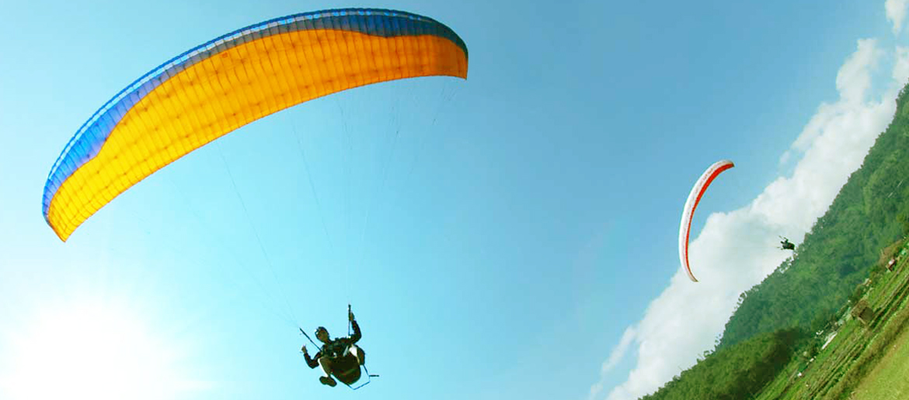
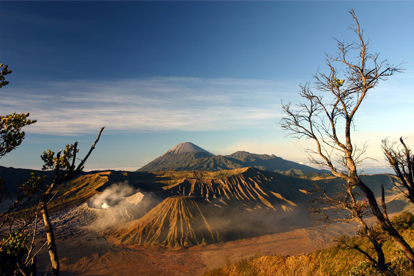
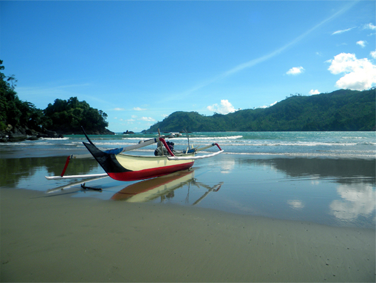

Destination
Being around by many mountain, Malang not only came with mountain vacation, but our beach, cultural spot, and Human Interest is worth to experienced.

Batu
is a city located in East Java Province of Indonesia. It is situated about 20 km to the northwest of Malang. Formerly, it was a part of Malang Regency; but in 2001, Batu became an independent city. A population of 190,000 people, it lies on the southern slopes of Gunung Welirang. Its population largely consists of Javanese.

Bromo
Mount Bromo is an active volcano and part of the Tengger massif, in East Java, Indonesia. At 2,329 metres (7,641 ft) it is not the highest peak of the massif, but is the most well known
